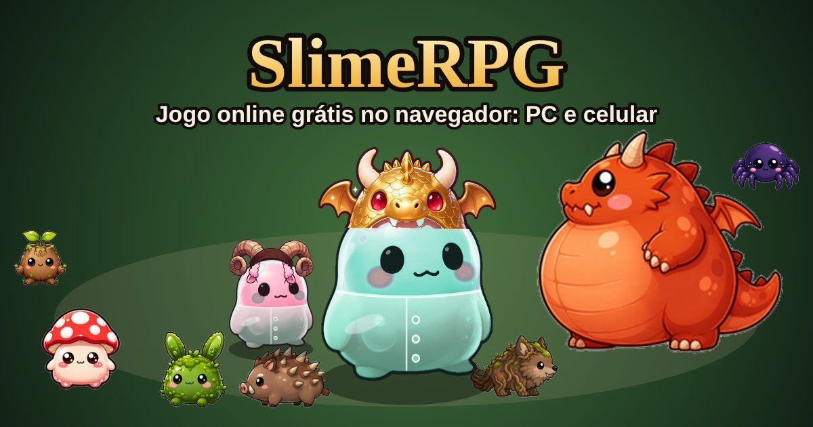

SlimeRPG: jogo online grátis no navegador
Seja um slime, derrote monstros fofos, suba até o nível 20 e enfrente o dragão com outros jogadores. Não precisa instalar: funciona no PC e no celular.
Jogar agora, grátis
Como funciona
- Você só anda (WASD, setas ou joystick na tela). As armas atacam e usam habilidades sozinhas.
- A cada nível, um dado sorteia quanto sobe cada atributo: Força, Destreza, Mana e Saúde.
- Monstros derrotados soltam armas e peitorais. Duas armas diferentes criam uma habilidade misturada.
- Ao morrer você perde o nível, mas guarda os equipamentos.
Modos de jogo
- Clássico
- Monstros, PvP liberado e o dragão no centro do mapa.
- Cooperativo
- Todos do mesmo lado contra o dragão, com ranking de menor tempo.
- PvP
- Todos contra todos, com ranking de abates.
Eventos e prêmios
- Hora do Slime: toda sexta, das 20h às 21h (horário de Brasília), o XP vale em dobro.
- Rankings semanais: o 1º lugar de cada ranking ganha uma skin exclusiva.
- Chapéu de pioneiro: quem criar conta até 31/12/2026 ganha um chapéu exclusivo.
- Convide amigos: 3 amigos pelo seu link no nível 5 e você ganha a Coroa da amizade.
Perguntas frequentes
- O SlimeRPG é grátis?
- Sim, 100% grátis. As skins são só visuais e não dão vantagem em combate.
- Precisa instalar?
- Não. Roda no navegador. Se quiser, dá para adicionar à tela inicial como aplicativo.
- Funciona no celular?
- Sim, com joystick na tela. No PC, use WASD ou as setas.
- Dá para jogar com amigos?
- Sim, até 30 jogadores por sala, em tempo real.
In English
SlimeRPG is a free multiplayer .io browser game: play as a slime, defeat cute forest monsters, level up to 20 and fight a chubby dragon solo, in co-op or in PvP. No download, works on PC and mobile. The game is in Portuguese.
Jogar SlimeRPG